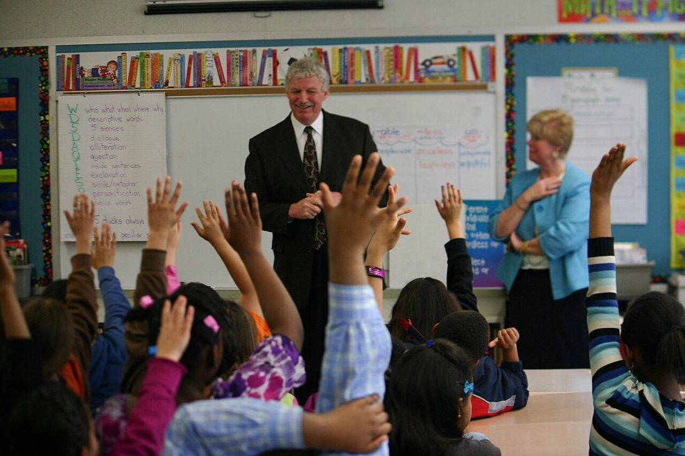

孩子不是縮小版的大人——他們理解世界的方式不同，恐懼的來源不同，能記住的東西也不同。把大人的防災知識原封不動塞給孩子，通常只會嚇到他們、卻學不會。這篇教你用孩子懂的方式，把保命的觀念變成他們記得住、用得出來的能力，並在過程中降低而非放大他們的恐懼。

很多家長擔心「講了會嚇到孩子」，於是選擇不談。但孩子其實會從新聞、學校、同儕那裡接收到片段又扭曲的資訊，那反而更嚇人。與其如此，不如由你主動、誠實而簡單地說明，並強調兩件事：「大人正在保護你」與「我們有計畫」。研究與經驗都顯示，有準備、有掌控感的孩子，比被蒙在鼓裡的孩子更安定。照顧孩子情緒的更多方法見〈災難中的心理韌性〉。
孩子的能力隨年齡發展，教學內容也要跟著調整：
| 年齡 | 重點能力 | 怎麼教 |
|---|---|---|
| 學齡前（3–6） | 記住姓名、家長電話；認得警報聲；知道要找大人 | 兒歌、重複念、貼圖卡 |
| 學齡（7–12） | 保命動作、會合點、打求救電話、看懂逃生路線 | 遊戲、演練、繪本、角色扮演 |
| 青少年（13+） | 協助照顧弟妹、操作滅火器、基礎急救、辨識假訊息 | 賦予責任、實作、討論 |
讓孩子準備一個輕便小包，既有參與感，也備妥他需要的東西：
整體家庭準備見〈緊急避難包〉與〈家庭防災計畫〉，記得把孩子的角色寫進去。
孩子透過「玩」和「做」學得最好，也最不會害怕：
災難或壓力下，孩子的情緒可能以各種方式表現，這些多半是正常反應，父母的回應方式很關鍵：
| 常見反應 | 怎麼回應 |
|---|---|
| 黏人、怕分離 | 多陪伴與擁抱，事先說明你會回來、去哪裡 |
| 退化（尿床、吸手指） | 別責備，理解這是壓力反應，給予耐心與安全感 |
| 做惡夢、睡不好 | 維持睡前儀式與熟悉的安撫物，陪伴入睡 |
| 反覆問同樣問題 | 耐心、一致地簡單回答，幫助他建立確定感 |
| 沉默、退縮 | 透過畫畫、遊戲讓他表達，不強迫開口 |
若孩子的強烈情緒或行為改變持續很久、明顯影響生活，應尋求專業協助（相關資源見〈災難中的心理韌性〉）。
有身心特殊需求的孩子，準備要更個別化：感官敏感的孩子可能對警報聲、人群特別不安，可準備降噪耳罩與熟悉物品；慢性病或醫療依賴的孩子要備足藥物、器材與病歷；溝通或認知障礙的孩子，可用圖卡、簡單步驟與反覆演練幫助他理解該怎麼做，聯絡卡上也標註其特殊需求與照顧要點，讓協助者能快速掌握。
孩子白天多半在學校。事先了解學校的防災演練、災時收容與家長接送規則，確認學校登記的緊急聯絡人正確；並和孩子說明「在學校遇到狀況時，要聽老師的指示」。家庭與學校的規則一致，孩子才不會混亂。
孩子學防災，一半靠你教的內容，另一半靠觀察你的反應。當警報響起、地震來襲，他們會第一時間看向大人的臉——你若慌亂尖叫，再多的演練也會瓦解；你若沉著地做出練過的動作，他們就會跟著照做。所以照顧好自己的情緒（見〈災難中的心理韌性〉），本身就是給孩子最有力的防災教育。你穩，孩子就穩；把準備做在前面，臨場才有餘裕保持鎮定。
該，用年齡聽得懂、不誇大的方式，強調「大人在保護你、我們有計畫」。有掌控感的孩子更安定。
學齡前就能開始：幼兒記姓名電話、認警報；學齡學保命動作與會合；青少年可分擔責任。
需要輕便小包：聯絡卡、安撫物、零食水、哨子，重物由家長代背。
用遊戲和演練取代說教，避免驚悚畫面，多肯定多擁抱，定位為「更安全的練習」。
教他待在原地或去會合點，向警察、店員、帶小孩的家長求助，說出聯絡卡上的資訊。
※ 本文為一般兒童防災教育參考，整理自教育部、NCDR、Ready.gov 等公開資訊，不能取代官方即時指示與專業建議。教學請依孩子個別狀況調整，緊急時以現場與官方指揮為準。